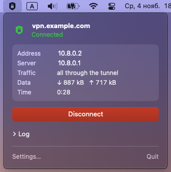
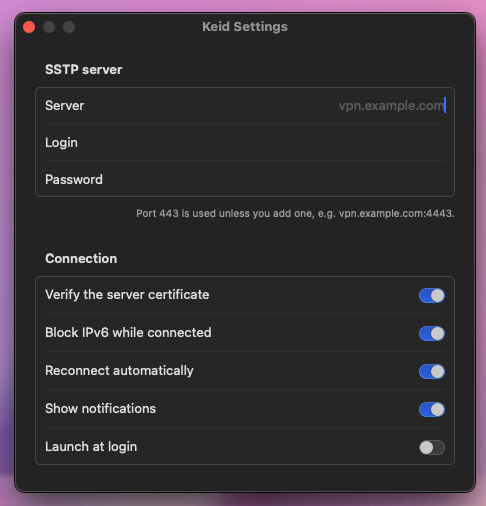

Keid
SSTP VPN клиент для macOS — для роутеров Keenetic (Netcraze), MikroTik, Windows Server и SoftEther
В macOS нет SSTP. Keid добавляет его в строку меню: один раз указали сервер — дальше MacBook подключается к роутеру в один клик, и ничего не уходит с Mac мимо туннеля.

VPN, который не протекает
SSTP — это обычный HTTPS на порту 443, он проходит почти через любую сеть. Keid следит, чтобы трафик шёл только этим путём.
Kill-switch на фаерволе
От «Подключить» до «Отключить» ничего не уходит с Mac мимо туннеля: ни во время подключения, ни после обрыва, неверного пароля или другого сбоя, ни от приложений, привязанных к Wi-Fi. Доступны только SSTP-сервер и ваша локальная сеть.
якорь pf · DNS только через туннель · IPv6 заблокирован
-
Один клик
Подключение и отключение из строки меню, щит сразу показывает состояние. Сервер, логин и пароль — в самом приложении, без конфигов и терминала.
-
Весь трафик
IPv4 и DNS идут через ваш домашний роутер, поэтому работают его правила — в том числе маршрутизация по доменам на Keenetic.
-
Поднимается сам
Переподключается после смены Wi-Fi, сна или перезапуска сервера — сразу, как вернулась сеть. При неверном пароле сразу останавливается, чтобы учётную запись не заблокировали.
-
Сделан для Mac
Универсальное приложение для Apple Silicon и Intel, уведомления, счётчики трафика, запуск при входе, русский и английский.
Живёт в строке меню
Одна панель, чтобы подключиться и видеть туннель, одно окно, чтобы настроить сервер.

С чем работает
Подойдёт любой SSTP-сервер с MS-CHAPv2; вот самые распространённые.
- Keenetic / NetcrazeSSTP VPN-сервер, KeenDNS
- MikroTikSSTP-сервер RouterOS
- Windows ServerRRAS с SSTP
- SoftEther VPNс включённым SSTP
Установка
Без Homebrew, Docker и терминала.
Скачайте
DMG со страницы релизов — перетащите Keid в «Программы».
Разрешите
Приложение не нотаризовано: при первом запуске откройте «Системные настройки» → «Конфиденциальность и безопасность» → «Всё равно открыть».
Настройте
Щит в строке меню → «Настройки»: сервер, логин и пароль, затем «Сохранить и установить».
Подключайтесь
Один клик. Дальше пароль администратора не нужен.